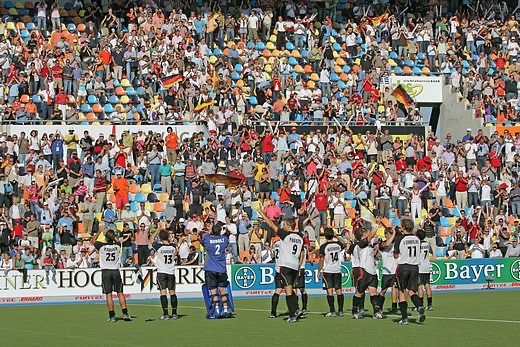
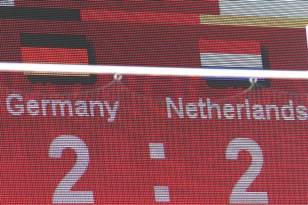
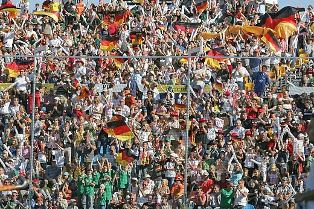

Die deutsche Hockeynationalmannschaft der Herren ist die erfolgreichste Mannschaft im deutschen olympischen Sport. Zahlreiche Olympiasiege, Welt- und Europameistertitel und Siege bei der Champions Trophy stehen auf der langen Erfolgsliste des Deutschen Hockey-Bundes.
Aber einen Namen hatte dieses erfolgreiche Team nie. Die Mannschaft wurde im TV und in der Presse immer recht umständlich als „die deutsche Herrenhockey-Nationalmannschaft“ oder „die Nationalmannschaft der Herren im Feldhockey“ beschrieben.
Das war auch Anfang der 2000er-Jahre noch so, als auf einer Länderspielreise im Vorfeld der Olympischen Spiele in Australien einem der damaligen Spieler des Nationalteams, Björn Emmerling, etwas auffiel, was letztlich die Basis für das Folgende bilden sollte:
Wenn man in Australien Sport verfolgt, ist dort überall von den Kookaburras, Wallabies und Hockeyroos zu hören oder zu lesen. Ohne Erklärung, ohne Zusatz: Jeder Zuschauer, Zuhörer oder Leser weiß anscheinend sofort, wer oder was damit gemeint ist.
Gemeint sind die Herrenhockey-, die Rugby- und die Frauenhockey-Nationalmannschaft. Der Name allein reichte aus.
Diese einfache Beobachtung ließ ihn nicht mehr los. Warum sollte das für seine Mannschaft im deutschen Hockey nicht auch funktionieren?
Eine Weile blieb die Idee liegen, doch im Vorfeld der Heim-WM 2006 kam sie wieder auf. Der Zeitpunkt war ideal: das größte Turnier im eigenen Land, ein neues Hockeystadion in Mönchengladbach, eine junge, ehrgeizige Mannschaft und ein Moment, in dem Hockey wieder ins Rampenlicht rückte.
Während eines Vorbereitungs-Trainingslagers in Mönchengladbach stellte Björn seine Idee dem Team vor, in dieser inzwischen legendären Runde im Whirlpool des Wellnessbereiches im Hotel Mercure.
Sogleich flogen mehrere Namensideen durch den Raum, darunter auch scherzhafte Anlehnungen an Begriffe, die Björn kurz zuvor im Radio gehört hatte. Dort war von der „FuBaNaMa“ die Rede, einer hypothetischen Abkürzung für die Fußball-Nationalmannschaft.
Wenn die Fußballer die „FuBaNaMa“ sind, dann sind wir die „HONAMAS“.
Ein kurzer, prägnanter, sofort verständlicher Name: HOckeyNAtionalMAnnschaft, kurz HONAMA.
Und das S? Es steht für die Mehrzahl: HONAMAS gibt es nie allein, sondern immer nur als Team.
HONAMAS. Die Grundlage war gelegt.